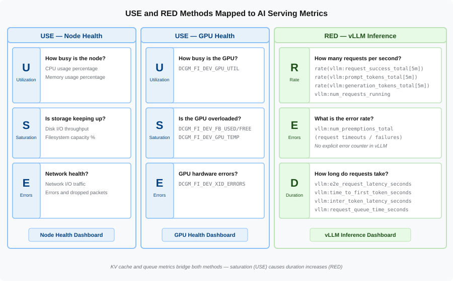

Dashboard Design Principles
Two Types of Dashboards
Not every dashboard serves the same purpose. In practice, teams need two distinct types, and conflating them produces dashboards that are poor at both jobs.
Health Overview Dashboards
A health overview dashboard is designed for a wall screen or a quick glance during your morning standup. It answers one question: "Is everything OK right now?"
Characteristics:
-
Large, color-coded panels — green/yellow/red at a distance
-
Few panels (5-10) showing only the most critical signals
-
Current values, not detailed time series
-
No interaction required — readable from across the room
Investigation Dashboards
An investigation dashboard is designed for the engineer who just got paged at 2 AM. It answers the follow-up question: "What exactly is wrong and where?"
Characteristics:
-
Dense time-series graphs with multiple series overlaid
-
Percentile breakdowns (p50, p95, p99) not just averages
-
Drill-down variables (select a specific pod, GPU, or model)
-
Often organized by the timeline of an incident: symptom at the top, potential causes below
The two types work as a pair. The health overview tells you something is wrong. The investigation dashboard tells you what and why.
Dashboards and Alerts Work as a Pair
Dashboards and alerts are complementary tools that serve different purposes:
-
Alerts push: They wake you up when something crosses a threshold. An alert says "the p99 latency exceeded 5 seconds for 10 minutes — act now."
-
Dashboards pull: You open them to understand context. A dashboard says "here is what the latency, GPU utilization, and queue depth looked like over the last hour."
When an alert fires, the first thing the on-call engineer does is open the relevant dashboard.
This means your alert thresholds and your dashboard panels should use the same PromQL expressions.
If an alert fires on histogram_quantile(0.99, …) but your dashboard shows only averages, the engineer cannot see the problem the alert detected.
| Design your alerts and dashboards together. Every alerting rule you create in the Alerting chapter should have a corresponding dashboard panel that makes the alert condition visible. |
The USE Method: For Resources
The USE Method was developed by Brendan Gregg at Netflix. It provides a systematic checklist for analyzing the health of any resource — a CPU, a disk, a network interface, or a GPU.
For every resource, check three things:
| Signal | Definition | Question It Answers |
|---|---|---|
*U*tilization |
Percentage of the resource’s capacity currently in use |
How busy is it? |
*S*aturation |
Work that is queued because the resource is at capacity |
Is demand exceeding supply? |
*E*rrors |
Count of error events on the resource |
Is something broken? |
Applying USE to GPUs
| USE Signal | Metric | Interpretation |
|---|---|---|
Utilization |
|
GPU compute utilization as a percentage (0-100) |
Saturation |
|
Requests queued because the GPU cannot start processing them yet (KV cache full or compute busy) |
Errors |
|
Thermal throttling — the GPU reduces clock speed to avoid damage, degrading inference performance |
| GPU "errors" in the USE sense are not always hard failures. Thermal throttling is a soft error that degrades performance without crashing the pod. Your dashboards should surface these pre-failure conditions. |
The RED Method: For Services
The RED Method was developed by Tom Wilkie at Grafana Labs. It provides a framework for monitoring services — anything that handles requests from users or other services.
For every service, track three things:
| Signal | Definition | Question It Answers |
|---|---|---|
*R*ate |
Number of requests per second the service is handling |
How much traffic is it receiving? |
*E*rrors |
Number of those requests that are failing |
How many requests are not succeeding? |
*D*uration |
Time each request takes to complete |
How fast is it responding? |
Applying RED to vLLM Inference
| RED Signal | Metric | Interpretation |
|---|---|---|
Rate |
|
Successful inference requests per second over a 5-minute window |
Errors |
|
Requests that were truncated because they hit the max output token limit — the model could not finish its response |
Duration |
|
End-to-end latency histogram from request arrival to final token |
The finished_reason="length" label is subtle but important. These requests did not fail with an HTTP error — they returned 200 OK. But the response was cut short because the model hit its output limit. Users received incomplete answers. Only application-level metrics can detect this.
|
Mapping Methods to Our Three Dashboards
The following diagram shows how USE and RED methods map to specific metrics across the three dashboards:

In the exercises later in this chapter, you will deploy three dashboards. Each one applies USE, RED, or both:
| Dashboard | Method | Key Panels |
|---|---|---|
Node Health |
USE for compute nodes |
CPU utilization, memory saturation, filesystem errors, network throughput |
GPU Health |
USE for GPUs |
GPU utilization, GPU memory used vs. total, GPU temperature, power draw |
vLLM Inference |
RED + saturation |
Request rate, error rate by reason, e2e latency percentiles, queue depth, KV cache usage |
Notice that the vLLM Inference dashboard blends both methods.
It uses RED for the service-level view (rate, errors, duration) but adds the saturation signal (num_requests_waiting, kv_cache_usage_perc) from the USE method.
This is common in practice — strict adherence to one method is less important than covering the signals that matter.
Design Principles
Beyond USE and RED, several design principles make dashboards useful under pressure:
Put saturation signals at the top. Queue depth and KV cache usage are the earliest indicators of trouble. By the time utilization or latency degrades, requests have already been waiting. The top row of your dashboard should show the signals that move first.
Tie thresholds to alerts.
If you have an alert that fires when kv_cache_usage_perc > 0.90 for 10 minutes, add a horizontal threshold line at 90% on the KV cache panel.
The on-call engineer can instantly see whether the current value is near, at, or past the alert threshold.
Show percentiles, not averages. An average latency of 2 seconds might mean every request takes 2 seconds — or it might mean 99% of requests take 200ms and 1% take 180 seconds. The average hides the experience of the worst-affected users. Always show p50 (the median experience), p95 (the tail that catches early problems), and p99 (the worst 1% that trigger alerts).
Use consistent time windows.
If one panel uses a [1m] rate window and another uses [15m], their graphs move at different speeds during an incident, creating confusion.
Pick a standard window — [5m] is a good default for operational dashboards — and use it across all panels.